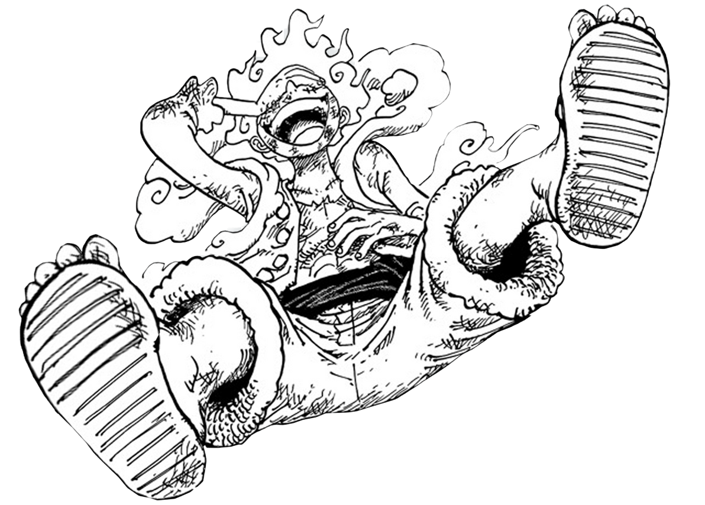

Monkey D. Luffy is the captain of the Straw Hats, and dreamt of being a pirate since childhood from the influence of his idol and mentor Red-Haired Shanks. At the age of 17, Luffy sets sail from the East Blue Sea to the Grand Line in search of the legendary treasure One Piece, to succeed Gold Roger as the King of the Pirates. He fights multiple antagonists, and aids and befriends the inhabitants of several islands on his journey. Usually cheerful, he becomes serious and even aggressive when he fights. Luffy uses his rubber body to concentrate his power, executing a range of attacks. In his signature attack, the Gum-Gum Pistol, he slingshots punches at opponents from a distance. Luffy also grows stronger over the course of the story by transforming his body through different "Gears"; this is reflected in his bounty, which is used to measure the threat he poses to the World Government, which forbids piracy. Luffy clashes with the three kinds of great powers in One Piece: the World Government's Marines and its allied privateers known as the Seven Warlords of the Sea, and the most influential pirate captains known as the Four Emperors.
